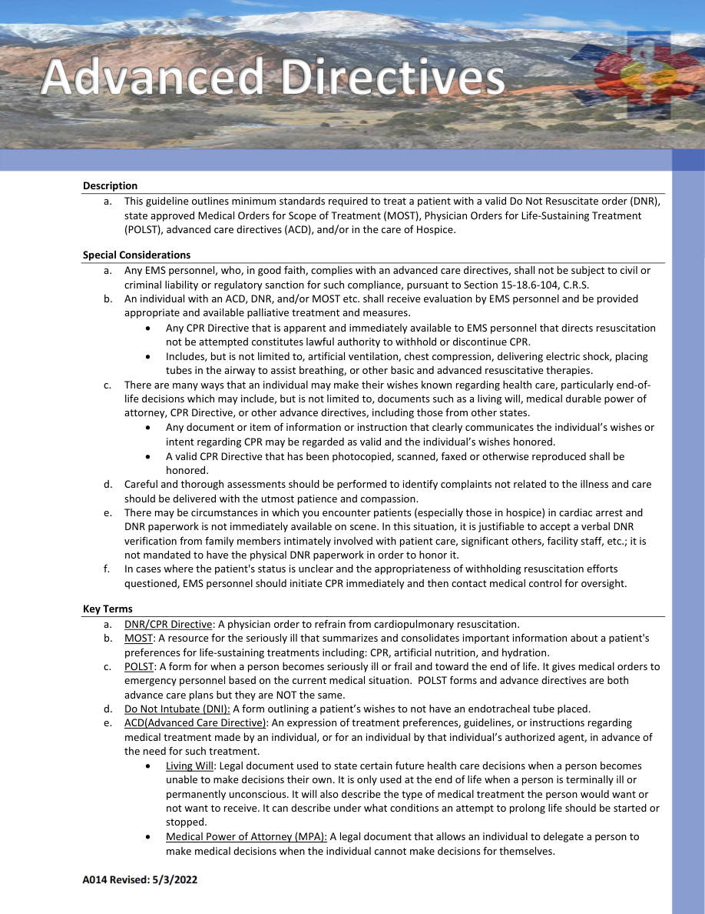
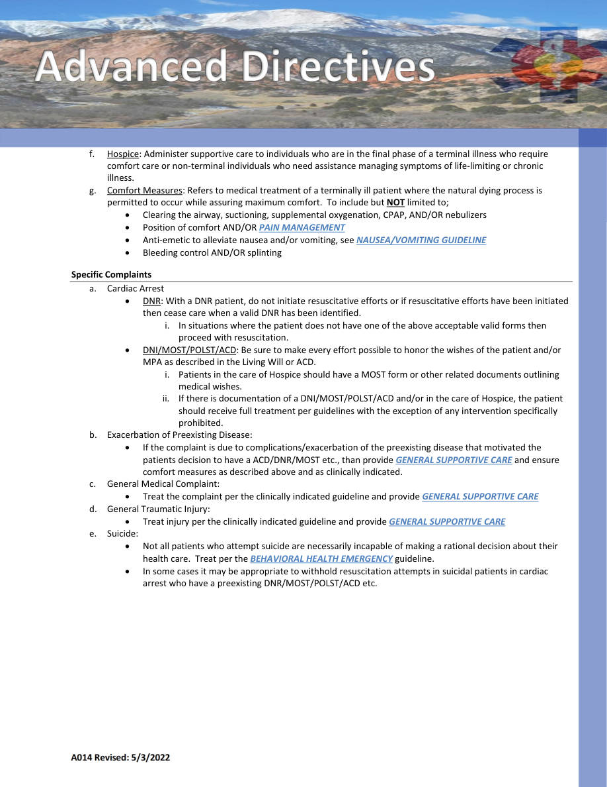
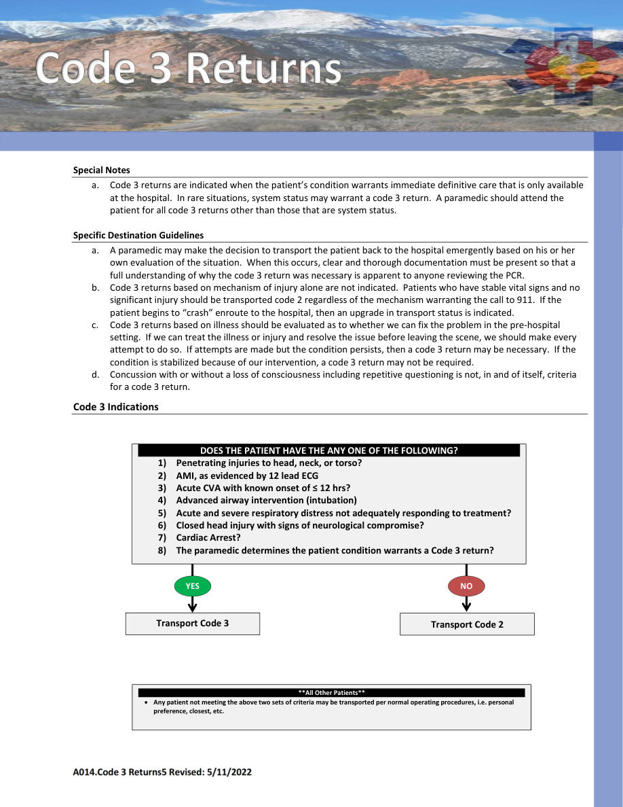
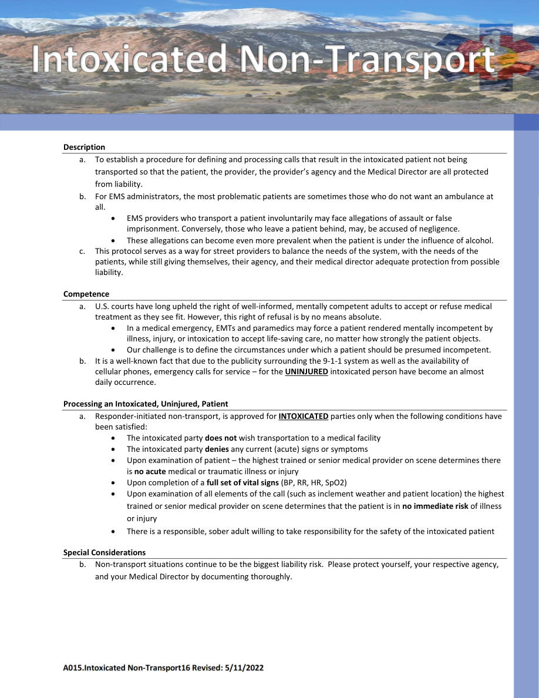

A014 — illness.
General Guidelines • Pages 24-27
Use the scanned pages to see the official tables/charts/algorithms. The extracted text is there for copy/paste and searchability.
Extracted text (page 24)
A014 Revised: 5/3/2022 Description a. This guideline outlines minimum standards required to treat a patient with a valid Do Not Resuscitate order (DNR), state approved Medical Orders for Scope of Treatment (MOST), Physician Orders for Life‐Sustaining Treatment (POLST), advanced care directives (ACD), and/or in the care of Hospice. Special Considerations a. Any EMS personnel, who, in good faith, complies with an advanced care directives, shall not be subject to civil or criminal liability or regulatory sanction for such compliance, pursuant to Section 15‐18.6‐104, C.R.S. b. An individual with an ACD, DNR, and/or MOST etc. shall receive evaluation by EMS personnel and be provided appropriate and available palliative treatment and measures. Any CPR Directive that is apparent and immediately available to EMS personnel that directs resuscitation not be attempted constitutes lawful authority to withhold or discontinue CPR. Includes, but is not limited to, artificial ventilation, chest compression, delivering electric shock, placing tubes in the airway to assist breathing, or other basic and advanced resuscitative therapies. c. There are many ways that an individual may make their wishes known regarding health care, particularly end‐of‐ life decisions which may include, but is not limited to, documents such as a living will, medical durable power of attorney, CPR Directive, or other advance directives, including those from other states. Any document or item of information or instruction that clearly communicates the individual’s wishes or intent regarding CPR may be regarded as valid and the individual’s wishes honored. A valid CPR Directive that has been photocopied, scanned, faxed or otherwise reproduced shall be honored. d. Careful and thorough assessments should be performed to identify complaints not related to the illness and care should be delivered with the utmost patience and compassion. e. There may be circumstances in which you encounter patients (especially those in hospice) in cardiac arrest and DNR paperwork is not immediately available on scene. In this situation, it is justifiable to accept a verbal DNR verification from family members intimately involved with patient care, significant others, facility staff, etc.; it is not mandated to have the physical DNR paperwork in order to honor it. f. In cases where the patient's status is unclear and the appropriateness of withholding resuscitation efforts questioned, EMS personnel should initiate CPR immediately and then contact medical control for oversight. Key Terms a. DNR/CPR Directive: A physician order to refrain from cardiopulmonary resuscitation. b. MOST: A resource for the seriously ill that summarizes and consolidates important information about a patient's preferences for life‐sustaining treatments including: CPR, artificial nutrition, and hydration. c. POLST: A form for when a person becomes seriously ill or frail and toward the end of life. It gives medical orders to emergency personnel based on the current medical situation. POLST forms and advance directives are both advance care plans but they are NOT the same. d. Do Not Intubate (DNI): A form outlining a patient’s wishes to not have an endotracheal tube placed. e. ACD(Advanced Care Directive): An expression of treatment preferences, guidelines, or instructions regarding medical treatment made by an individual, or for an individual by that individual’s authorized agent, in advance of the need for such treatment. Living Will: Legal document used to state certain future health care decisions when a person becomes unable to make decisions their own. It is only used at the end of life when a person is terminally ill or permanently unconscious. It will also describe the type of medical treatment the person would want or not want to receive. It can describe under what conditions an attempt to prolong life should be started or stopped. Medical Power of Attorney (MPA): A legal document that allows an individual to delegate a person to make medical decisions when the individual cannot make decisions for themselves.
Extracted text (page 25)
A014 Revised: 5/3/2022 f. Hospice: Administer supportive care to individuals who are in the final phase of a terminal illness who require comfort care or non‐terminal individuals who need assistance managing symptoms of life‐limiting or chronic illness. g. Comfort Measures: Refers to medical treatment of a terminally ill patient where the natural dying process is permitted to occur while assuring maximum comfort. To include but NOT limited to; Clearing the airway, suctioning, supplemental oxygenation, CPAP, AND/OR nebulizers Position of comfort AND/OR PAIN MANAGEMENT Anti‐emetic to alleviate nausea and/or vomiting, see NAUSEA/VOMITING GUIDELINE Bleeding control AND/OR splinting Specific Complaints a. Cardiac Arrest DNR: With a DNR patient, do not initiate resuscitative efforts or if resuscitative efforts have been initiated then cease care when a valid DNR has been identified. i. In situations where the patient does not have one of the above acceptable valid forms then proceed with resuscitation. DNI/MOST/POLST/ACD: Be sure to make every effort possible to honor the wishes of the patient and/or MPA as described in the Living Will or ACD. i. Patients in the care of Hospice should have a MOST form or other related documents outlining medical wishes. ii. If there is documentation of a DNI/MOST/POLST/ACD and/or in the care of Hospice, the patient should receive full treatment per guidelines with the exception of any intervention specifically prohibited. b. Exacerbation of Preexisting Disease: If the complaint is due to complications/exacerbation of the preexisting disease that motivated the patients decision to have a ACD/DNR/MOST etc., than provide GENERAL SUPPORTIVE CARE and ensure comfort measures as described above and as clinically indicated. c. General Medical Complaint: Treat the complaint per the clinically indicated guideline and provide GENERAL SUPPORTIVE CARE d. General Traumatic Injury: Treat injury per the clinically indicated guideline and provide GENERAL SUPPORTIVE CARE e. Suicide: Not all patients who attempt suicide are necessarily incapable of making a rational decision about their health care. Treat per the BEHAVIORAL HEALTH EMERGENCY guideline. In some cases it may be appropriate to withhold resuscitation attempts in suicidal patients in cardiac arrest who have a preexisting DNR/MOST/POLST/ACD etc.
Extracted text (page 26)
A014.Code 3 Returns5 Revised: 5/11/2022 Special Notes a. a. Code 3 returns are indicated when the patient’s condition warrants immediate definitive care that is only available at the hospital. In rare situations, system status may warrant a code 3 return. A paramedic should attend the patient for all code 3 returns other than those that are system status. Specific Destination Guidelines a. A paramedic may make the decision to transport the patient back to the hospital emergently based on his or her own evaluation of the situation. When this occurs, clear and thorough documentation must be present so that a full understanding of why the code 3 return was necessary is apparent to anyone reviewing the PCR. b. Code 3 returns based on mechanism of injury alone are not indicated. Patients who have stable vital signs and no significant injury should be transported code 2 regardless of the mechanism warranting the call to 911. If the patient begins to “crash” enroute to the hospital, then an upgrade in transport status is indicated. c. Code 3 returns based on illness should be evaluated as to whether we can fix the problem in the pre‐hospital setting. If we can treat the illness or injury and resolve the issue before leaving the scene, we should make every attempt to do so. If attempts are made but the condition persists, then a code 3 return may be necessary. If the condition is stabilized because of our intervention, a code 3 return may not be required. d. Concussion with or without a loss of consciousness including repetitive questioning is not, in and of itself, criteria for a code 3 return. Code 3 Indications YES Transport Code 2 NO DOES THE PATIENT HAVE THE ANY ONE OF THE FOLLOWING? 1) Penetrating injuries to head, neck, or torso? 2) AMI, as evidenced by 12 lead ECG 3) Acute CVA with known onset of ≤ 12 hrs? 4) Advanced airway intervention (intubation) 5) Acute and severe respiratory distress not adequately responding to treatment? 6) Closed head injury with signs of neurological compromise? 7) Cardiac Arrest? 8) The paramedic determines the patient condition warrants a Code 3 return? Transport Code 3 **All Other Patients** Any patient not meeting the above two sets of criteria may be transported per normal operating procedures, i.e. personal preference, closest, etc. YES
Extracted text (page 27)
A015.Intoxicated Non‐Transport16 Revised: 5/11/2022 Description a. To establish a procedure for defining and processing calls that result in the intoxicated patient not being transported so that the patient, the provider, the provider’s agency and the Medical Director are all protected from liability. b. For EMS administrators, the most problematic patients are sometimes those who do not want an ambulance at all. EMS providers who transport a patient involuntarily may face allegations of assault or false imprisonment. Conversely, those who leave a patient behind, may, be accused of negligence. These allegations can become even more prevalent when the patient is under the influence of alcohol. c. This protocol serves as a way for street providers to balance the needs of the system, with the needs of the patients, while still giving themselves, their agency, and their medical director adequate protection from possible liability. Competence a. U.S. courts have long upheld the right of well‐informed, mentally competent adults to accept or refuse medical treatment as they see fit. However, this right of refusal is by no means absolute. In a medical emergency, EMTs and paramedics may force a patient rendered mentally incompetent by illness, injury, or intoxication to accept life‐saving care, no matter how strongly the patient objects. Our challenge is to define the circumstances under which a patient should be presumed incompetent. b. It is a well‐known fact that due to the publicity surrounding the 9‐1‐1 system as well as the availability of cellular phones, emergency calls for service – for the UNINJURED intoxicated person have become an almost daily occurrence. Processing an Intoxicated, Uninjured, Patient a. Responder‐initiated non‐transport, is approved for INTOXICATED parties only when the following conditions have been satisfied: The intoxicated party does not wish transportation to a medical facility The intoxicated party denies any current (acute) signs or symptoms Upon examination of patient – the highest trained or senior medical provider on scene determines there is no acute medical or traumatic illness or injury Upon completion of a full set of vital signs (BP, RR, HR, SpO2) Upon examination of all elements of the call (such as inclement weather and patient location) the highest trained or senior medical provider on scene determines that the patient is in no immediate risk of illness or injury There is a responsible, sober adult willing to take responsibility for the safety of the intoxicated patient Special Considerations b. Non‐transport situations continue to be the biggest liability risk. Please protect yourself, your respective agency, and your Medical Director by documenting thoroughly.
Scanned pages (tables/charts preserved)
Page 24 scan
Page 25 scan
Page 26 scan
Page 27 scan
